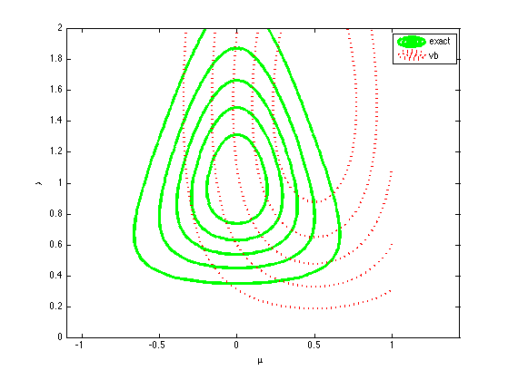
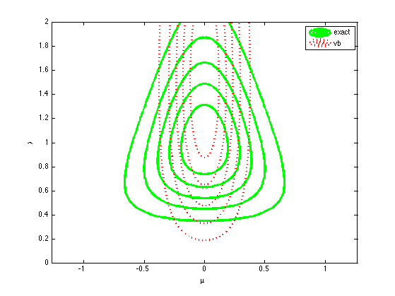
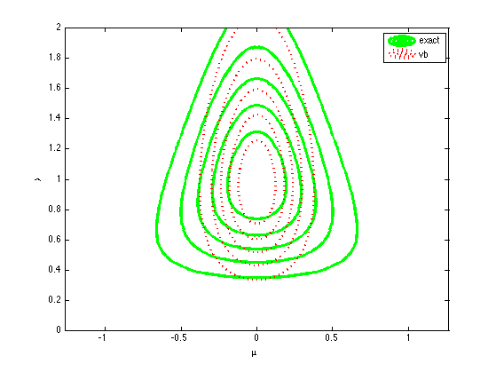
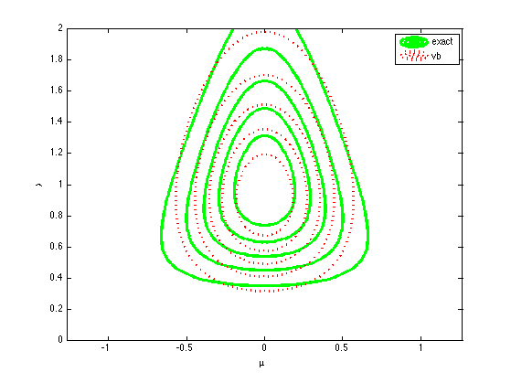
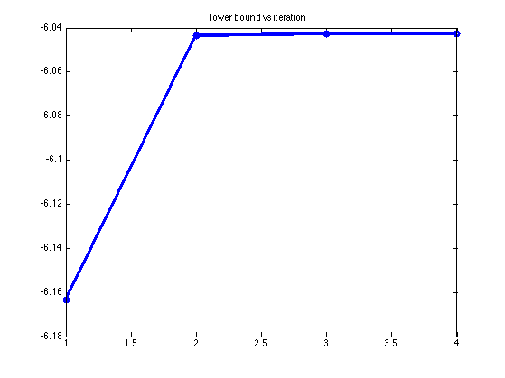

Variational bayes for univariate Gaussian
Contents
% This file is from pmtk3.googlecode.com function unigaussVbDemo()
% PMTKauthor Robert Tseng % PMTKmodified Kevin Murphy
Make data with mean 0 and unit variance
setSeed(0); N = 10; D = 1; data = rand(N, D); data = standardizeCols(data); m = mean(data); s = sum(data); sSq = sum(data.*data); xbar = m; sigma2Hat = sSq/N - xbar^2;
The true posterior model using normal gamma prior
hyper parameters
a0 = 0; b0 = 0; mu0 = 0; kappa0 = 0; truePost.mu = mean(data); truePost.kappa = N; truePost.alpha = N/2; truePost.beta = 1/2*sum((data - m).^2);
Initialize VB to fit univariate gaussian
initial guess
aN = 2.5; bN = 1;
muN = 0.5; kappaN = 5;
makePlot(truePost, aN, bN, muN, kappaN);
printPmtkFigure('unigaussVbDemo1')
iter = 1;
Lq = 0;
maxIter = 100;
converged = false;
tol = 1e-5;
Lbound(1) = Lq;
 Main loop of VB
while iter <= maxIter && ~converged LqOld = Lq; % update q(mu) elambda = aN / bN; muN = (kappa0 * mu0 + N * m) / (kappa0 + N); kappaN = (kappa0 + N) * elambda; if (iter == 1) makePlot(truePost, aN, bN, muN, kappaN); printPmtkFigure('unigaussVbDemo2') end % update q(lambda) emu = muN; emuSquare = 1/kappaN + muN^2; aN = a0 + (N+1)/2; bN = b0 + 1/2 * ((sSq + kappa0 * mu0^2) - 2 * emu *(s + kappa0 * mu0) + emuSquare*(kappa0+N)); if (iter == 1) makePlot(truePost, aN, bN, muN, kappaN); printPmtkFigure('unigaussVbDemo3') end % check convergence Lq = 1/2 * log(1/kappaN) + log(gamma(aN)) - aN * log(bN); Lbound(iter) = Lq; if (iter > 1) if (Lq - LqOld < -tol) fprintf('Lq did not increase, iter = %d, LqOld = %.3f, Lq = %.3f\n', iter, LqOld, Lq); elseif (abs(Lq - LqOld) < tol) converged = true; end end iter = iter + 1; end fprintf('Total # of iterations: %d\n', iter); makePlot(truePost, aN, bN, muN, kappaN); printPmtkFigure('unigaussVbDemo4') figure; plot(Lbound, 'o-', 'linewidth', 3); title('lower bound vs iteration')
Total # of iterations: 5   
end %{ function L = bound(aN, bN, muN, kN, xbar, sigma2, N) L = -0.5*log(kappaN) + 0.5*(1+log(2*pi)) ... + gammaln(aN) - (aN-1)*digamma(aN) - log(bN) + aN ... -(N/2)*log(2*pi) + (N/2)*(digamma(aN) - log(bN)) ... -(N*aN)/(2*bN)*(sigma2 + xbar^2 - 2*muN*xbar + muN^2 + 1/kN) ... + (a0-1)*(digamma(aN) - log(bN)) - b0*aN/bN + a0*log(b0) - gammaln(a0) ... + 0.5*log(k0/(2*pi)) + 0.5*(digamma(aN)-log(bN)) ... - 0.5*k0*aN/bN*((1/kN) + (muN-mu0)^2); end %} function [] = makePlot(truePost, aN, bN, muN, kappaN) % Plot the true NG posterior and the predicted posterior via VB level = 5; figure; plotFnTrue = @(input) normalGammaPdf(input(:,1), input(:,2), truePost.mu, ... truePost.kappa, truePost.alpha, truePost.beta); [p, h] = plotContour(plotFnTrue, [-1 1 0 2], level, 'g-', 'linewidth', 3, 'npoints', 50); hold on; plotFnPredict = @(input) vbPost(input(:,1), input(:,2), aN, bN, muN, kappaN); [p, h] = plotContour(plotFnPredict, [-1 1 0 2], level, 'r:', 'linewidth', 2, 'npoints', 50); axis equal xlabel('\mu'); ylabel('\lambda'); legend('exact', 'vb') end function p = vbPost(mu, lambda, aN, bN, muN, kappaN) mup = gaussProb(mu, muN, (1/kappaN)); lambdap = exp(gammaLogprob(struct('a', aN, 'b', bN), lambda)); p = mup .* lambdap; end function p = normalGammaPdf(mu, lambda, muprior, kappa, alpha, beta) C = (beta ^ alpha * sqrt(kappa)) / (gamma(alpha) * sqrt(2*pi)); p = C * (lambda .^ (alpha-1/2)) .* (exp(-beta * lambda)) .* ... (exp(-kappa/2* (lambda .* (mu - muprior).^2))); end